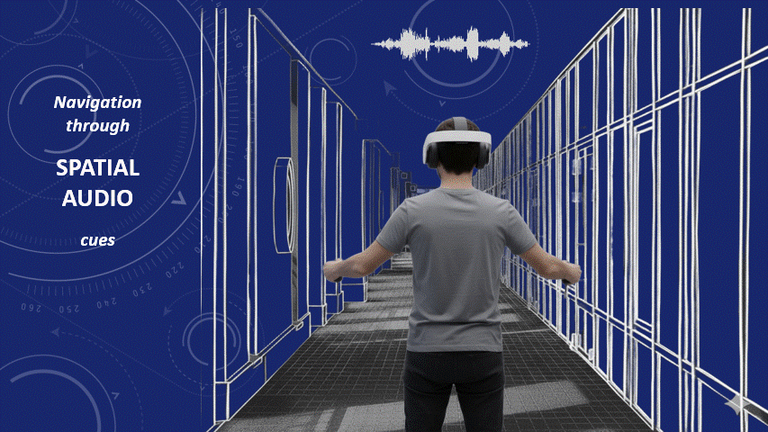

Spatial Audio Training for Visually Impaired Users Navigation in VR: An Analytical Approach
Gaurish Garg, Shimmila Bhowmick (2025)

Summary
Developed a VR spatial audio training game tested on 35 students (aged 13–17) in rural India, achieving sound localization within 22–41 cm, with over 98% volume-based spatial accuracy and JND of 1–5 dB, providing new routes to accessible navigation for ~4× higher prevalence PVI populations in developing countries.
Details
- VR Game for Accessibility: Built a Unity-based VR training game simulating spatial audio navigation for school-age users with simulated glaucoma/macular degeneration.
- Precise Results: Participants could locate virtual sound sources within 22–41 cm, mirroring real-world assistive tech studies.
- Accurate Audio Perception: Achieved >98% volume-based spatial accuracy, with JND of 1–5 dB—validated against psychoacoustic metrics.
- Data-Driven Analysis: Real-time collection and mathematical modeling of sound perception (attenuation, HRTF, and absorption) using MongoDB and custom equations.
- Inclusive Design: Tested in rural Indian schools, this work addresses the 2.2 billion people facing vision impairment globally—showcasing VR's effectiveness for accessible training in low-cost settings.